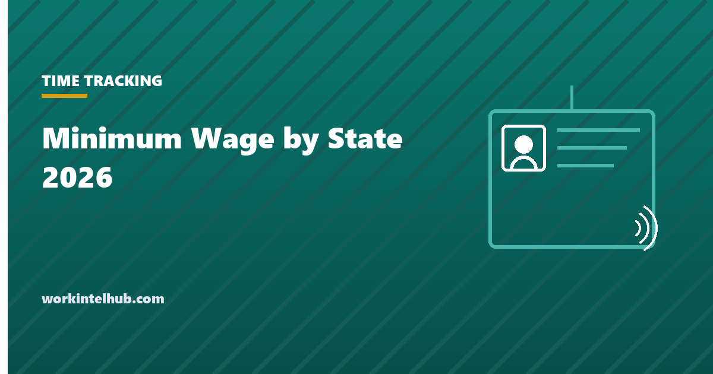

Minimum Wage by State 2026

The federal minimum wage has been $7.25 an hour since July 2009. In 2026, 30 states and the District of Columbia set a higher rate, most of them adjusting automatically each year, and the spread now runs from $7.25 in Texas to $18.40 in Washington, DC, with Seattle at $21.30 and Denver at $19.29 above their state floors. Twenty states use the federal rate, five of them because they have no state minimum wage law at all.
The lookup below gives the rate for any state with the tipped cash wage, the next scheduled change, and what the rate means in weekly and annual pay. The full table follows, then the rules that decide which rate applies when federal, state and city differ, how the tip credit works, and the increases already scheduled for the rest of 2026 and 2027.
Minimum wage lookup
Rates are state minimums as of 25 September 2026, checked against the Department of Labor's state table and state agency announcements. Cities and counties in California, Colorado, Illinois, Maryland, Minnesota, New Mexico, New York, Oregon and Washington set higher local rates. Tipped cash wages assume the tip credit is fully taken; the employee must still receive the full minimum with tips.
Minimum wage in every state, 2026
| State | Minimum wage | Effective | Tipped cash wage | Notes and next change |
|---|---|---|---|---|
| Alabama | $7.25 | Federal rate applies; no state minimum | $2.13 | No state law |
| Alaska | $14.00 | 1 Jul 2026 | $14.00 | No tip credit; rises to $15.00 on 1 Jul 2027, then indexed |
| Arizona | $15.15 | 1 Jan 2026 | $12.15 | Indexed to CPI each January |
| Arkansas | $11.00 | 1 Jan 2021 | $2.63 | Employers with 4 or more employees |
| California | $16.90 | 1 Jan 2026 | $16.90 | No tip credit; fast food $20.00; many cities higher; indexed |
| Colorado | $15.16 | 1 Jan 2026 | $12.14 | Indexed; Denver $19.29 |
| Connecticut | $16.94 | 1 Jan 2026 | $6.38 (service) / 8.23 (bartenders) | Indexed to employment cost index each January |
| Delaware | $15.00 | 1 Jan 2025 | $2.23 | No increase scheduled |
| District of Columbia | $18.40 | 1 Jul 2026 | $10.30 | Indexed each July; the tipped wage phase-out was paused in 2025 |
| Florida | $14.00 (15.00 from 30 Sep 2026) | 30 Sep 2025 | $10.98 (11.98 from 30 Sep 2026) | Reaches $15.00 on 30 Sep 2026, then indexed from 2027 |
| Georgia | $7.25 | Federal rate applies; state rate $5.15 covers few workers | $2.13 | State rate below federal |
| Hawaii | $16.00 | 1 Jan 2026 | $14.75 (tip credit $1.25 if wages plus tips reach $7.00 over minimum) | Rises to $18.00 on 1 Jan 2028 |
| Idaho | $7.25 | Federal rate | $3.35 | No state increase |
| Illinois | $15.00 | 1 Jan 2025 | $9.00 | Chicago $17.05 from 1 Jul 2026 |
| Indiana | $7.25 | Federal rate | $2.13 | No state increase |
| Iowa | $7.25 | Federal rate | $4.35 | No state increase |
| Kansas | $7.25 | Federal rate | $2.13 | No state increase |
| Kentucky | $7.25 | Federal rate | $2.13 | No state increase |
| Louisiana | $7.25 | Federal rate applies; no state minimum | $2.13 | No state law |
| Maine | $15.10 | 1 Jan 2026 | $7.55 | Indexed to CPI-W each January; Portland higher |
| Maryland | $15.00 | 1 Jan 2024 | $3.63 | Montgomery and Howard counties higher |
| Massachusetts | $15.00 | 1 Jan 2023 | $6.75 | No increase scheduled |
| Michigan | $13.73 | 1 Jan 2026 | $5.49 (40% of the minimum) | Rises to $15.00 on 1 Jan 2027, then indexed; the tipped share rises each year |
| Minnesota | $11.41 | 1 Jan 2026 | $11.41 | No tip credit; indexed; Minneapolis and St Paul higher |
| Mississippi | $7.25 | Federal rate applies; no state minimum | $2.13 | No state law |
| Missouri | $15.00 | 1 Jan 2026 | $7.50 | Indexed from 2027 |
| Montana | $10.85 | 1 Jan 2026 | $10.85 | No tip credit; indexed |
| Nebraska | $15.00 | 1 Jan 2026 | $2.13 | Indexed from 2027 |
| Nevada | $12.00 | 1 Jul 2024 | $12.00 | No tip credit; no increase scheduled |
| New Hampshire | $7.25 | Federal rate | $3.27 | No state increase |
| New Jersey | $15.92 (14.23 for fewer than 6 employees and seasonal) | 1 Jan 2026 | $6.05 | Indexed each January |
| New Mexico | $12.00 | 1 Jan 2023 | $3.00 | Santa Fe and Albuquerque higher |
| New York | $17.00 (NYC, Long Island, Westchester); 16.00 rest of state | 1 Jan 2026 | $11.35 / 10.65 (food service) | Indexed from 2027 |
| North Carolina | $7.25 | Federal rate | $2.13 | No state increase |
| North Dakota | $7.25 | Federal rate | $4.86 | No state increase |
| Ohio | $11.00 | 1 Jan 2026 | $5.50 | Indexed each January; employers under $394,000 gross pay federal rate |
| Oklahoma | $7.25 | Federal rate | $2.13 | No state increase |
| Oregon | $15.55 standard; 16.80 Portland metro; 14.55 non-urban | 1 Jul 2026 | $Same (no tip credit) | Indexed each July |
| Pennsylvania | $7.25 | Federal rate | $2.83 | No state increase |
| Rhode Island | $16.00 | 1 Jan 2026 | $3.89 | Rises to $17.00 on 1 Jan 2027 |
| South Carolina | $7.25 | Federal rate applies; no state minimum | $2.13 | No state law |
| South Dakota | $11.85 | 1 Jan 2026 | $5.93 | Indexed each January |
| Tennessee | $7.25 | Federal rate applies; no state minimum | $2.13 | No state law |
| Texas | $7.25 | Federal rate | $2.13 | No state increase |
| Utah | $7.25 | Federal rate | $2.13 | No state increase |
| Vermont | $14.42 | 1 Jan 2026 | $7.21 | Indexed each January |
| Virginia | $12.77 | 1 Jan 2026 | $2.13 | Indexed each January |
| Washington | $17.13 | 1 Jan 2026 | $17.13 | No tip credit; indexed; Seattle $21.30 |
| West Virginia | $8.75 | 1 Jan 2016 | $2.62 | Employers with 6 or more employees at one location |
| Wisconsin | $7.25 | Federal rate | $2.33 | No state increase |
| Wyoming | $7.25 | Federal rate applies; state rate $5.15 covers few workers | $2.13 | State rate below federal |
Sources: the Department of Labor state minimum wage table and tipped minimum wage table, state labor agency announcements for 2026 rates, and Oregon BOLI for the July 2026 Oregon rates. Rates for Alaska, Florida and Oregon changed mid-year; the table shows the rate in force on 25 September 2026 and the scheduled step where one is set.
Which rate applies
The highest applicable rate wins. Federal law sets a floor of $7.25; a state may set a higher floor; a city or county may set one higher still, where state law allows it. An employer covered by all three pays the highest. Twenty-five states pre-empt local minimum wages, which is why city rates cluster in California, Colorado, Illinois, Maryland, Minnesota, New Mexico, New York, Oregon and Washington.
Coverage matters too. The federal minimum applies to employees of enterprises with $500,000 or more in annual sales and to most others through individual coverage, which is nearly everyone. Some states exempt small employers (Ohio below $394,000 in gross receipts, West Virginia below six employees, Arkansas below four), and several set lower youth, training or student rates. A worker who falls outside the state law is still covered by the federal $7.25.
The rate applies to the hours worked, wherever the employer is based. A remote employee in Washington working for a Texas company is owed Washington's $17.13, and a Seattle resident $21.30. Our hours calculator and time and a half calculator apply the rate to recorded time; overtime is owed at 1.5 times the regular rate over 40 hours a week federally, and over 8 hours a day in California, Alaska, Nevada and Colorado.
The tip credit
Federal law allows an employer to pay tipped employees a cash wage of $2.13 an hour and count up to $5.12 an hour of tips toward the $7.25 minimum, provided the employee actually receives enough tips to reach it, is told about the credit in advance, keeps all tips (subject to a valid tip pool), and spends no more than a limited share of time on non-tipped duties. If tips fall short in a workweek, the employer makes up the difference.
Seven states (Alaska, California, Minnesota, Montana, Nevada, Oregon and Washington) prohibit the tip credit and require the full minimum in cash. Most others allow a smaller credit than federal law, so their tipped cash wage sits between $2.13 and the full rate. Michigan is phasing its tipped wage up as a rising percentage of the minimum, and the District of Columbia paused the phase-out voters approved in 2022, leaving its tipped wage at $10.30. Chicago's ordinance eliminates the credit for larger employers by 2028. Where the cash wage plus tips falls below the state minimum, the shortfall is owed, and it is the most common wage claim in hospitality.
Increases scheduled for late 2026 and 2027
- Florida: $15.00 on 30 September 2026, the last step of the 2020 ballot measure; indexed from 2027.
- Michigan: $15.00 on 1 January 2027, with the tipped share continuing to rise; indexed afterwards.
- Rhode Island: $17.00 on 1 January 2027.
- Alaska: $15.00 on 1 July 2027, then indexed.
- Hawaii: $18.00 on 1 January 2028.
- Indexed states (Arizona, California, Colorado, Connecticut, Maine, Minnesota, Missouri from 2027, Montana, Nebraska from 2027, New Jersey, New York from 2027, Ohio, Oregon, South Dakota, Vermont, Virginia, Washington and DC) announce their next rate in the autumn for 1 January, or in spring for 1 July.
- Cities: Denver rises to $19.84 for 2027; Seattle, Chicago and the California cities announce annually.
A minimum wage change also moves the exempt salary threshold in states that define it as a multiple of the minimum wage, which is why California's 2026 threshold is $70,304 and Washington's $80,168. Our salary versus hourly guide has the 2026 thresholds, and the salary to hourly calculator converts either way.
What employers need to do at each change
- Update pay rates on the effective date, for the workweek that contains it, prorating a week that straddles the change.
- Check tipped staff's cash wage and the tip credit notice, and recalculate any tip credit that no longer fits.
- Recheck exempt salaries in states with multiples of the minimum wage.
- Replace the labor law poster. Most states require the current rate to be posted, and the poster changes with it.
- Issue pay change notices where the state requires them (New York's notice within seven days of a change unless the pay stub shows it; California's for non-exempt staff), and check that any posted pay range still starts at or above the new floor.
- Watch compression. A $1 rise at the bottom pulls the next band up with it; employers that ignore it lose the experienced staff to the entry-level rate. The pay raise calculator shows what a matching adjustment costs.
Key takeaways
- The federal minimum is $7.25; 30 states and DC set higher rates in 2026, from $8.75 in West Virginia to $18.40 in DC, and 20 states use the federal rate.
- The highest applicable rate wins: federal, state or local. Rates follow where the work is done, including remote employees.
- Nineteen states and DC index their rate annually; Florida reaches $15.00 on 30 September 2026 and Michigan on 1 January 2027.
- Seven states prohibit the tip credit; elsewhere the employer must make up any shortfall between cash wage plus tips and the minimum.
- Minimum wage changes move exempt salary thresholds in California, Washington and other states that set them as multiples.
- At each change: update rates for the straddling week, recheck tipped wages and exempt salaries, replace the poster, issue notices, and manage compression.
Frequently asked questions
What is the federal minimum wage in 2026?
$7.25 an hour, unchanged since 24 July 2009. The tipped cash wage is $2.13 with a maximum tip credit of $5.12. Thirty states and the District of Columbia set higher rates, and the higher rate applies where the employee works.
Which state has the highest minimum wage in 2026?
Washington, at $17.13, is the highest state rate, followed by New York City and its suburbs at $17.00, Connecticut at $16.94 and California at $16.90. The District of Columbia is higher than any state at $18.40 from 1 July 2026. Among cities, Seattle's $21.30 and Denver's $19.29 lead.
Which states still use the $7.25 federal minimum?
Twenty: Alabama, Georgia, Idaho, Indiana, Iowa, Kansas, Kentucky, Louisiana, Mississippi, New Hampshire, North Carolina, North Dakota, Oklahoma, Pennsylvania, South Carolina, Tennessee, Texas, Utah, Wisconsin and Wyoming. Alabama, Louisiana, Mississippi, South Carolina and Tennessee have no state minimum wage law; Georgia and Wyoming set $5.15, which federal law overrides for almost all workers.
Which minimum wage applies if the state and city rates differ?
The higher one. Federal law is a floor, states may set a higher floor, and cities or counties may go higher again where the state permits local wage laws. An employer pays the highest rate that applies to the place where the employee works.
Does the minimum wage increase in 2027?
In many states, yes. Michigan reaches $15.00 and Rhode Island $17.00 on 1 January 2027, and the nineteen indexed states and DC will announce inflation adjustments for their next effective date. Florida's $15.00 step arrives earlier, on 30 September 2026. The federal rate has no scheduled change.
How does the tip credit work?
An employer may pay tipped employees a lower cash wage and count tips toward the minimum, up to the state's maximum credit, provided the employee is told in advance, keeps their tips, and actually receives enough to reach the full minimum each workweek. If not, the employer pays the difference. Seven states prohibit the credit entirely.